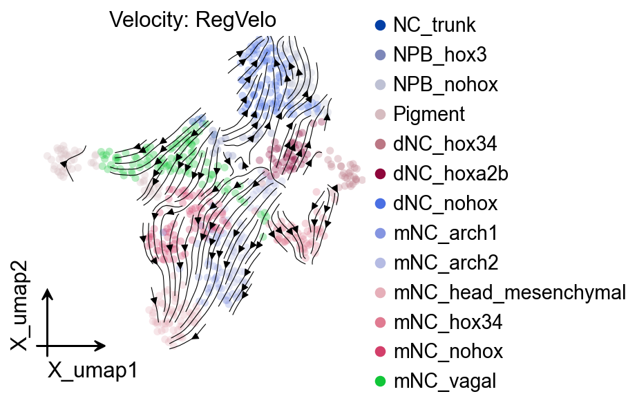
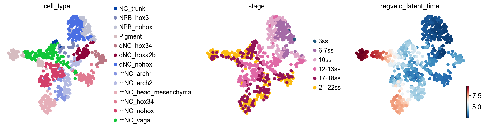
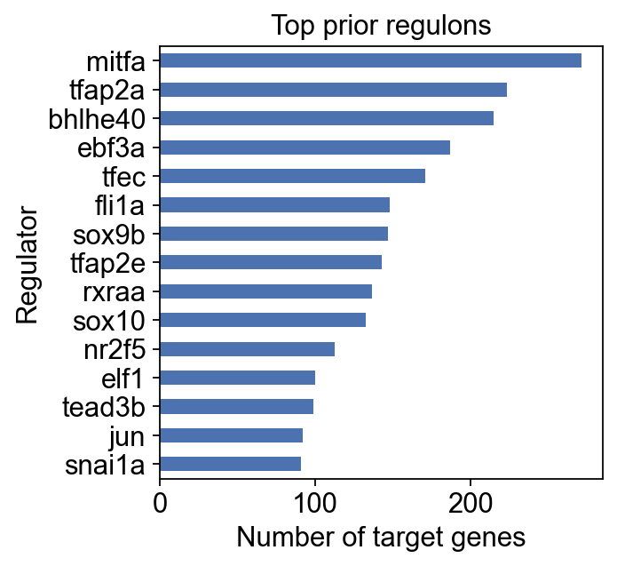
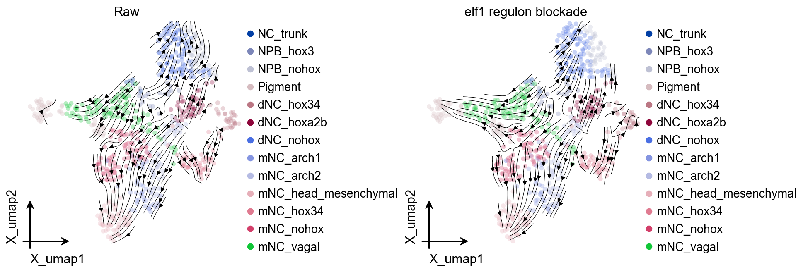

RNA velocity and regulatory perturbation analysis with RegVelo#
RegVelo is a gene-regulatory-informed RNA velocity model that jointly models transcriptional regulation and RNA splicing dynamics at single-cell resolution. Classical RNA velocity methods infer state transitions from unspliced and spliced RNA dynamics, but they make limited use of TF regulons, prior GRNs, and regulatory perturbations. GRN inference alone, in contrast, often lacks expression dynamics and cellular time. RegVelo places these two sources of information in one generative dynamical framework: it constrains transcription rates with a prior GRN, then infers velocity, latent time, and perturbed vector fields through coupled ODEs.

The inputs for RegVelo are an AnnData object with spliced/unspliced moment layers, a prior GRN aligned to the gene space, and a TF/regulator list. The model learns splicing kinetics under regulatory-network constraints and exports a velocity layer, latent time, gene-level kinetic parameters, and a velocity field that can be passed to CellRank. A trained RegVelo model can also run in silico TF regulon blockade: downstream regulatory effects of a TF are removed to generate a perturbed velocity field, and CellRank can then compare baseline and perturbed fate probabilities to connect local regulatory changes with long-term fate shifts.
In OmicVerse, we keep RegVelo’s upstream model semantics while returning the results to adata for a workflow consistent with other velocity methods. This tutorial uses the adata-first ov.single.velocity(..., method="regvelo") interface for velocity inference, and ov.single.cellrank_fate() plus ov.pl.cell_fate() for CellRank fate analysis and visualization. The example follows the official RegVelo zebrafish neural crest tutorial, but the workflow is organized in OmicVerse style: explicit example-data loading, RegVelo input preparation, velocity inference, streamplot visualization, CellRank fate analysis, and TF perturbation simulation.
References: the RegVelo repository and documentation.
import numpy as np
import warnings
warnings.filterwarnings("ignore", category=FutureWarning)
import omicverse as ov
import regvelo as rgv
ov.plot_set(font_path="Arial")
%reload_ext autoreload
%autoreload 2
🔬 Starting plot initialization...
Using already downloaded Arial font from: /var/folders/rv/3jnfbs0d6r7d0c5bfj7ft5k00000gn/T/omicverse_arial.ttf
Registered as: Arial
🧬 Detecting GPU devices…
✅ Apple Silicon MPS detected
• [MPS] Apple Silicon GPU - Metal Performance Shaders available
____ _ _ __
/ __ \____ ___ (_)___| | / /__ _____________
/ / / / __ `__ \/ / ___/ | / / _ \/ ___/ ___/ _ \
/ /_/ / / / / / / / /__ | |/ / __/ / (__ ) __/
\____/_/ /_/ /_/_/\___/ |___/\___/_/ /____/\___/
🔖 Version: 2.1.3rc1 📚 Tutorials: https://omicverse.readthedocs.io/
✅ plot_set complete.
Load the official RegVelo example and preprocess it with OmicVerse#
This tutorial still uses the upstream RegVelo zebrafish neural crest example, but separates example-data loading from RegVelo preprocessing: data are loaded directly from upstream regvelo.datasets, while OmicVerse handles neighbors/moments, RegVelo gene preprocessing, and GRN alignment after adata is available.
adata = rgv.datasets.zebrafish_nc()
prior_net = rgv.datasets.zebrafish_grn()
velo_prep = ov.single.Velo(adata)
prior_grn, regulators = velo_prep.prepare_regvelo(
prior_net,
n_neighbors=30,
n_pcs=50,
moment_backend="scvelo",
prior_orientation="regulator_by_target",
)
adata = velo_prep.adata
print(adata)
print("Available layers:", list(adata.layers.keys())[:10])
print("Prior GRN shape:", prior_grn.shape)
print("TFs retained:", len(regulators))
In Velo module, you should keep all genes' expression not normalized.
🖥️ Using Scanpy CPU to calculate neighbors...
🔍 K-Nearest Neighbors Graph Construction:
Mode: cpu
Neighbors: 30
Method: umap
Metric: euclidean
PCs used: 50
🔍 Computing neighbor distances...
🔍 Computing connectivity matrix...
💡 Using UMAP-style connectivity
✓ Graph is fully connected
✅ KNN Graph Construction Completed Successfully!
✓ Processed: 697 cells with 30 neighbors each
✓ Results added to AnnData object:
• 'neighbors': Neighbors metadata (adata.uns)
• 'distances': Distance matrix (adata.obsp)
• 'connectivities': Connectivity matrix (adata.obsp)
╭─ SUMMARY: neighbors ───────────────────────────────────────────────╮
│ Duration: 1.9515s │
│ Shape: 697 x 8,012 (Unchanged) │
│ │
│ CHANGES DETECTED │
│ ──────────────── │
│ ● UNS │ ✚ REFERENCE_MANU │
│ │ ✚ _ov_provenance │
│ │ ✚ neighbors │
│ │ └─ params: {'n_neighbors': 30, 'method': 'umap', 'random_s...│
│ │
│ ● OBSP │ ✚ connectivities (sparse matrix, 697x697) │
│ │ ✚ distances (sparse matrix, 697x697) │
│ │
╰────────────────────────────────────────────────────────────────────╯
computing moments based on connectivities
finished (0:00:00) --> added
'Ms' and 'Mu', moments of un/spliced abundances (adata.layers)
computing velocities
finished (0:00:00) --> added
'velocity', velocity vectors for each individual cell (adata.layers)
AnnData object with n_obs × n_vars = 697 × 1008
obs: 'initial_size_unspliced', 'initial_size_spliced', 'initial_size', 'n_counts', 'cell_type', 'stage'
var: 'Accession', 'Chromosome', 'End', 'Start', 'Strand', 'gene_count_corr', 'is_tf', 'velocity_gamma', 'velocity_qreg_ratio', 'velocity_r2', 'velocity_genes'
uns: 'cell_type_colors', 'neighbors', 'REFERENCE_MANU', '_ov_provenance', 'history_log', 'velocity_params', 'regulators', 'targets', 'skeleton', 'network', 'regvelo_prepare', 'regvelo_regulators'
obsm: 'X_pca', 'X_umap'
layers: 'ambiguous', 'matrix', 'spliced', 'unspliced', 'Ms', 'Mu', 'velocity'
obsp: 'distances', 'connectivities'
Available layers: ['ambiguous', 'matrix', 'spliced', 'unspliced', 'Ms', 'Mu', 'velocity']
Prior GRN shape: (1008, 1008)
TFs retained: 81
Use the OmicVerse-prepared prior GRN#
Velo.prepare_regvelo() writes the aligned prior network to adata.uns["skeleton"] and stores the retained regulator list in adata.uns["regvelo_regulators"]. The upstream prior loaded by the RegVelo zebrafish helper is in regulator-by-target orientation; OmicVerse stores the aligned adata.uns["skeleton"], and ov.single.velocity(..., method="regvelo") handles the orientation expected by REGVELOVI.
prior_grn = adata.uns["skeleton"]
regulators = adata.uns["regvelo_regulators"]
print("Prior GRN shape:", prior_grn.shape)
print("Regulators:", len(regulators))
Prior GRN shape: (1008, 1008)
Regulators: 81
Run RegVelo through ov.single.velocity#
The RegVelo branch can be used as an adata-first velocity workflow: it trains the upstream model, exports layers["velocity"] to layers["velo_regvelo"], optionally builds the velocity graph, projects velocities to UMAP, records parameters in adata.uns["regvelo"], and keeps the model path for downstream perturbation analysis.
adata = ov.single.velocity(
adata,
method="regvelo",
prior_grn=prior_grn,
regulators=regulators,
model_save_path="result/regvelo_zebrafish",
model_overwrite=True,
velocity_key="velo_regvelo",
spliced_layer="Ms",
unspliced_layer="Mu",
n_samples=30,
regvelo_kwargs={
"soft_constraint": False,
},
train_kwargs={
"max_epochs": 50, # Use fewer epochs for the tutorial; increase for real analyses
},
compute_velocity_graph=True,
compute_velocity_embedding=True,
basis="umap",
graph_kwargs={
"xkey": "Ms",
},
)
In Velo module, you should keep all genes' expression not normalized.
computing velocity graph (using 1/12 cores)
finished (0:00:00) --> added
'velo_regvelo_graph', sparse matrix with cosine correlations (adata.uns)
computing velocity embedding
finished (0:00:00) --> added
'velo_regvelo_umap', embedded velocity vectors (adata.obsm)
Visualize the RegVelo vector field#
Here we read results directly from adata with OmicVerse plotting functions. ov.pl.embedding() draws the cellular embedding, and ov.pl.add_streamplot() overlays the velocity field stored in adata.obsm["velo_regvelo_umap"].
adata.uns["regvelo"]
{'spliced_layer': 'Ms',
'unspliced_layer': 'Mu',
'n_samples': 30,
'batch_size': 697,
'velocity_key': 'velo_regvelo',
'n_regulators': 81,
'model_load_path': None,
'model_save_path': 'result/regvelo_zebrafish',
'model_overwrite': True,
'reuse_regvelo_output': False,
'reused_regvelo_output': False}
fig = ov.plt.figure(figsize=(4, 4))
ax = ov.plt.subplot(1, 1, 1)
ov.pl.embedding(
adata,
basis="X_umap",
color="cell_type",
ax=ax,
show=False,
size=100,
alpha=0.3,
)
ov.pl.add_streamplot(
adata,
basis="X_umap",
velocity_key="velo_regvelo_umap",
ax=ax,
)
ov.plt.title("Velocity: RegVelo")
Text(0.5, 1.0, 'Velocity: RegVelo')
{kind=link}

Check latent time and regulon size#
This section inspects latent time and GRN structure. The exact diagnostic outputs can differ across RegVelo versions, so the cell first checks whether fit_t exists before plotting latent time, then summarizes prior regulon sizes from adata.uns["skeleton"].
fit_t = np.asarray(adata.layers["fit_t"])
adata.obs["regvelo_latent_time"] = fit_t.mean(axis=1)
ov.pl.embedding(
adata,
basis="X_umap",
color=["cell_type", "stage", "regvelo_latent_time"],
ncols=3,
frameon=False,
show=False,
)
[<Axes: title={'center': 'cell_type'}, xlabel='X_umap1', ylabel='X_umap2'>,
<Axes: title={'center': 'stage'}, xlabel='X_umap1', ylabel='X_umap2'>,
<Axes: title={'center': 'regvelo_latent_time'}, xlabel='X_umap1', ylabel='X_umap2'>]
{kind=link}

regulon_size = (prior_grn != 0).sum(axis=1).sort_values(ascending=False).head(15)
ax = regulon_size.sort_values().plot.barh(figsize=(4, 4), color="#4c72b0")
ax.set_xlabel("Number of target genes")
ax.set_ylabel("Regulator")
ax.set_title("Top prior regulons")
Text(0.5, 1.0, 'Top prior regulons')
{kind=link}

CellRank fate analysis from RegVelo velocities#
ov.single.cellrank_fate() builds a CellRank velocity kernel from adata.layers["velo_regvelo"], optionally mixes in a connectivity kernel, computes GPCCA macrostates, and stores the estimator/kernel in adata.uns["velocity_cellrank"].
terminal_states = ["mNC_head_mesenchymal", "mNC_hox34", "Pigment"]
terminal_states = [state for state in terminal_states if state in set(adata.obs["cell_type"])]
if not terminal_states:
raise ValueError("None of the tutorial terminal states were found in adata.obs['cell_type'].")
estimator = ov.single.cellrank_fate(
adata,
velocity_key="velo_regvelo",
xkey="Ms",
cluster_key="cell_type",
terminal_states=terminal_states,
n_states=7,
n_cells=30,
connectivity_weight=0.2,
compute_fate_probabilities=True,
plot=False,
)
In Velo module, you should keep all genes' expression not normalized.
WARNING: Unable to import `petsc4py` or `slepc4py`. Using `method='brandts'`
WARNING: For `method='brandts'`, dense matrix is required. Densifying
WARNING: Unable to import petsc4py. For installation, please refer to: https://petsc4py.readthedocs.io/en/stable/install.html.
Defaulting to `'gmres'` solver.
ov.pl.cell_fate() reuses the CellRank result stored in adata.uns["velocity_cellrank"]["estimator"]. It only visualizes the terminal states and does not recompute them.
ov.pl.cell_fate(adata, which="terminal", basis="umap")
{kind=link}
Fate probabilities and commitment score#
Beyond terminal-state dot plots, the official RegVelo perturbation tutorial also inspects CellRank fate probabilities and commitment scores. commitment_score is based on the entropy of the fate-probability distribution; lower values usually indicate more committed cell fates.
estimator.plot_fate_probabilities(
same_plot=False,
basis="umap",
)
{kind=link}
rgv.pl.commitment_score(
adata=adata,
lineage_key="lineages_fwd",
frameon=False,
s=40,
cmap="coolwarm",
title="Commitment score",
)
{kind=link}
Native RegVelo TF regulon blockade simulation#
The reproducibility repository uses saved RegVelo models for TF perturbation and regulatory screening. Because ov.single.velocity(method="regvelo") has recorded the model path in adata.uns["regvelo_model_path"], we create a lightweight Velo helper here to continue with the native RegVelo perturbation API.
velo_helper = ov.single.Velo(adata)
elf1_perturbed_adata, elf1_perturbed_model = velo_helper.regvelo_perturb(
"elf1",
model="result/regvelo_zebrafish",
cutoff=0.001,
batch_size=adata.n_obs,
)
print(elf1_perturbed_adata)
In Velo module, you should keep all genes' expression not normalized.
INFO File result/regvelo_zebrafish/model.pt already downloaded
AnnData object with n_obs × n_vars = 697 × 1008
obs: 'initial_size_unspliced', 'initial_size_spliced', 'initial_size', 'n_counts', 'cell_type', 'stage', 'velo_regvelo_self_transition', 'regvelo_latent_time', 'macrostates_fwd', 'term_states_fwd', 'term_states_fwd_probs', 'commitment_score'
var: 'Accession', 'Chromosome', 'End', 'Start', 'Strand', 'gene_count_corr', 'is_tf', 'velocity_gamma', 'velocity_qreg_ratio', 'velocity_r2', 'velocity_genes', 'fit_beta', 'fit_gamma', 'fit_scaling', 'velo_regvelo_genes'
uns: 'cell_type_colors', 'neighbors', 'REFERENCE_MANU', '_ov_provenance', 'history_log', 'velocity_params', 'regulators', 'targets', 'skeleton', 'network', 'regvelo_prepare', 'regvelo_regulators', '_scvi_uuid', '_scvi_manager_uuid', 'regvelo_model_path', 'regvelo', 'velo_regvelo_graph', 'velo_regvelo_graph_neg', 'velo_regvelo_params', 'stage_colors_rgba', 'stage_colors', 'schur_matrix_fwd', 'eigendecomposition_fwd', 'macrostates_fwd_colors', 'coarse_fwd', 'term_states_fwd_colors', 'velocity_cellrank'
obsm: 'X_pca', 'X_umap', 'velo_regvelo_umap', 'schur_vectors_fwd', 'macrostates_fwd_memberships', 'term_states_fwd_memberships', 'lineages_fwd'
layers: 'ambiguous', 'matrix', 'spliced', 'unspliced', 'Ms', 'Mu', 'velocity', 'latent_time_velovi', 'fit_t', 'velo_regvelo', 'latent_time_regvelo'
obsp: 'distances', 'connectivities'
fig, axes = ov.plt.subplots(1, 2, figsize=(12, 4), constrained_layout=True)
ov.pl.embedding(
adata,
basis="X_umap",
color="cell_type",
ax=axes[0],
show=False,
size=100,
alpha=0.3,
)
ov.pl.add_streamplot(
adata,
basis="X_umap",
velocity_key="velo_regvelo_umap",
ax=axes[0],
)
axes[0].set_title("Raw")
elf1_perturbed_velo = ov.single.Velo(elf1_perturbed_adata)
elf1_perturbed_velo.velocity_graph(vkey="velocity", xkey="Ms", n_jobs=8)
elf1_perturbed_velo.velocity_embedding(basis="umap", vkey="velocity")
ov.pl.embedding(
elf1_perturbed_adata,
basis="X_umap",
color="cell_type",
ax=axes[1],
show=False,
size=100,
alpha=0.3,
)
ov.pl.add_streamplot(
elf1_perturbed_adata,
basis="X_umap",
velocity_key="velocity_umap",
ax=axes[1],
)
axes[1].set_title("elf1 regulon blockade")
ov.plt.show()
In Velo module, you should keep all genes' expression not normalized.
computing velocity graph (using 8/12 cores)
finished (0:00:07) --> added
'velocity_graph', sparse matrix with cosine correlations (adata.uns)
computing velocity embedding
finished (0:00:00) --> added
'velocity_umap', embedded velocity vectors (adata.obsm)
{kind=link}

Quantify the effect of TF blockade#
In addition to streamplot visualization, we can compare the baseline and perturbed velocity fields and CellRank fate probabilities.
Two complementary metrics are shown here:
Local effect: velocity cosine dissimilarity for each cell. Larger values indicate stronger directional changes after perturbation.
Fate effect: recompute CellRank fate probabilities on the perturbed velocity field and compare terminal-state probabilities before and after perturbation.
ov.single.velocity_effect(
adata,
elf1_perturbed_adata,
baseline_velocity_key="velo_regvelo",
perturbed_velocity_key="velocity",
target="elf1",
)
velocity_effect_summary = (
adata.obs.groupby("cell_type", observed=True)["elf1_velocity_effect"]
.agg(["mean", "median", "max"])
.sort_values("mean", ascending=False)
)
velocity_effect_summary
In Velo module, you should keep all genes' expression not normalized.
mean median max
cell_type
Pigment 0.000255 0.000308 0.000387
mNC_vagal 0.000142 0.000115 0.000287
mNC_arch2 0.000123 0.000121 0.000386
NPB_hox3 0.000121 0.000099 0.000327
dNC_hoxa2b 0.000106 0.000079 0.000335
mNC_arch1 0.000100 0.000084 0.000252
mNC_nohox 0.000098 0.000083 0.000333
NC_trunk 0.000093 0.000088 0.000121
mNC_hox34 0.000091 0.000088 0.000202
dNC_hox34 0.000091 0.000091 0.000166
mNC_head_mesenchymal 0.000076 0.000068 0.000149
NPB_nohox 0.000063 0.000058 0.000130
dNC_nohox 0.000060 0.000056 0.000123
ov.pl.embedding(
adata,
basis="X_umap",
color="elf1_velocity_effect",
cmap="viridis",
size=100,
)
{kind=link}
elf1_estimator = ov.single.cellrank_fate(
elf1_perturbed_adata,
velocity_key="velocity",
xkey="Ms",
cluster_key="cell_type",
terminal_states=terminal_states,
n_states=7,
n_cells=30,
connectivity_weight=0.2,
compute_fate_probabilities=True,
plot=False,
)
In Velo module, you should keep all genes' expression not normalized.
WARNING: Unable to import `petsc4py` or `slepc4py`. Using `method='brandts'`
WARNING: For `method='brandts'`, dense matrix is required. Densifying
WARNING: Using `7` components would split a block of complex conjugate eigenvalues. Using `n_components=8`
WARNING: Unable to compute macrostates with `n_states=7` because it will split complex conjugate eigenvalues. Using `n_states=8`
import pandas as pd
def _lineage_to_df(adata_obj, key="lineages_fwd"):
lineages = adata_obj.obsm[key]
values = np.asarray(lineages)
names = getattr(lineages, "names", None)
if names is None:
names = [f"lineage_{i}" for i in range(values.shape[1])]
return pd.DataFrame(values, index=adata_obj.obs_names, columns=list(names))
baseline_fate = _lineage_to_df(adata)
elf1_fate = _lineage_to_df(elf1_perturbed_adata)
common_fates = baseline_fate.columns.intersection(elf1_fate.columns)
elf1_fate_delta = elf1_fate[common_fates] - baseline_fate[common_fates]
elf1_fate_delta.columns = [f"elf1_delta_{state}" for state in common_fates]
adata.obs = adata.obs.join(elf1_fate_delta)
elf1_fate_delta_summary = elf1_fate_delta.groupby(adata.obs["cell_type"], observed=True).mean()
elf1_fate_delta_summary
elf1_delta_mNC_head_mesenchymal elf1_delta_mNC_hox34 \
cell_type
NC_trunk -0.331760 -0.155969
NPB_hox3 -0.310808 -0.110552
NPB_nohox -0.297561 -0.069342
Pigment -0.112662 -0.065701
dNC_hox34 -0.234574 -0.103409
dNC_hoxa2b -0.293606 -0.063823
dNC_nohox -0.298146 -0.067176
mNC_arch1 0.014600 -0.039512
mNC_arch2 -0.014078 -0.068796
mNC_head_mesenchymal -0.000056 -0.000325
mNC_hox34 0.016972 -0.069553
mNC_nohox -0.116767 -0.063182
mNC_vagal -0.265562 -0.166745
elf1_delta_Pigment
cell_type
NC_trunk 0.487727
NPB_hox3 0.421353
NPB_nohox 0.366891
Pigment 0.178363
dNC_hox34 0.337972
dNC_hoxa2b 0.357417
dNC_nohox 0.365310
mNC_arch1 0.024913
mNC_arch2 0.082874
mNC_head_mesenchymal 0.000381
mNC_hox34 0.052581
mNC_nohox 0.179948
mNC_vagal 0.432305
ov.pl.embedding(
adata,
basis="X_umap",
color="elf1_delta_Pigment",
cmap="vlag",
vcenter=0,
size=100,
)
{kind=link}
RegVelo also provides a native fate-perturbation statistic that summarizes fate-probability depletion/enrichment after perturbation. Here ov.single.cell_fate_perturbation() provides a unified call; internally OmicVerse handles the metrics / mt namespace difference across RegVelo versions.
elf1_fate_stats = ov.single.cell_fate_perturbation(
adata,
perturbed={"elf1": elf1_perturbed_adata},
terminal_states=terminal_states,
score_method="likelihood",
)
elf1_fate_stats
In Velo module, you should keep all genes' expression not normalized.
Depletion likelihood p-value FDR adjusted p-value \
0 0.666427 2.696982e-27 8.090945e-27
1 0.654652 7.812122e-24 1.171818e-23
2 0.326490 1.000000e+00 1.000000e+00
Terminal state TF
0 mNC_head_mesenchymal elf1
1 mNC_hox34 elf1
2 Pigment elf1
rgv.pl.cellfate_perturbation(
adata=adata,
df=elf1_fate_stats,
color_label="cell_type",
figsize=(5, 4),
)
{kind=link}
Single-cell perturbation effect#
ov.single.perturbation_effect() writes the fate-probability difference between baseline and perturbation back to adata.obs. Negative values indicate that the probability of reaching a terminal fate decreases for that cell, while positive values indicate an increase.
adata = ov.single.perturbation_effect(
adata,
elf1_perturbed_adata,
terminal_states=terminal_states,
)
effect_cols = [col for col in adata.obs.columns if col.startswith("perturbation effect on ")]
print(effect_cols)
In Velo module, you should keep all genes' expression not normalized.
['perturbation effect on mNC_head_mesenchymal', 'perturbation effect on mNC_hox34', 'perturbation effect on Pigment']
effect_key = "perturbation effect on Pigment"
ov.pl.embedding(
adata,
basis="X_umap",
color=effect_key,
cmap="vlag",
vcenter=0,
size=100,
)
{kind=link}
Multiple TF blockade#
The tf argument of regvelo_perturb() can also receive multiple TFs. Multi-TF perturbation is useful for exploring combinatorial regulation, but it is best to first confirm that all selected TFs are retained in the regulator list of the current model.
multi_tfs = ["elf1", "nr2f5"]
multi_tfs = [tf for tf in multi_tfs if tf in adata.var_names]
multi_perturbed_adata, multi_perturbed_model = ov.single.Velo(adata).regvelo_perturb(
multi_tfs,
model="result/regvelo_zebrafish",
cutoff=0.001,
batch_size=adata.n_obs,
)
multi_perturbed_velo = ov.single.Velo(multi_perturbed_adata)
multi_perturbed_velo.velocity_graph(vkey="velocity", xkey="Ms", n_jobs=8)
multi_perturbed_velo.velocity_embedding(basis="umap", vkey="velocity")
In Velo module, you should keep all genes' expression not normalized.
INFO File result/regvelo_zebrafish/model.pt already downloaded
In Velo module, you should keep all genes' expression not normalized.
computing velocity graph (using 8/12 cores)
finished (0:00:01) --> added
'velocity_graph', sparse matrix with cosine correlations (adata.uns)
computing velocity embedding
finished (0:00:00) --> added
'velocity_umap', embedded velocity vectors (adata.obsm)
fig, axes = ov.plt.subplots(1, 2, figsize=(12, 4), constrained_layout=True)
ov.pl.embedding(
adata,
basis="X_umap",
color="cell_type",
ax=axes[0],
show=False,
size=100,
alpha=0.3,
)
ov.pl.add_streamplot(
adata,
basis="X_umap",
velocity_key="velo_regvelo_umap",
ax=axes[0],
)
axes[0].set_title("Raw")
ov.pl.embedding(
multi_perturbed_adata,
basis="X_umap",
color="cell_type",
ax=axes[1],
show=False,
size=100,
alpha=0.3,
)
ov.pl.add_streamplot(
multi_perturbed_adata,
basis="X_umap",
velocity_key="velocity_umap",
ax=axes[1],
)
axes[1].set_title("elf1 + nr2f5 blockade")
ov.plt.show()
{kind=link}